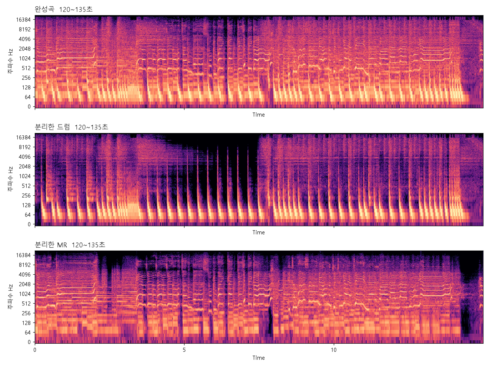
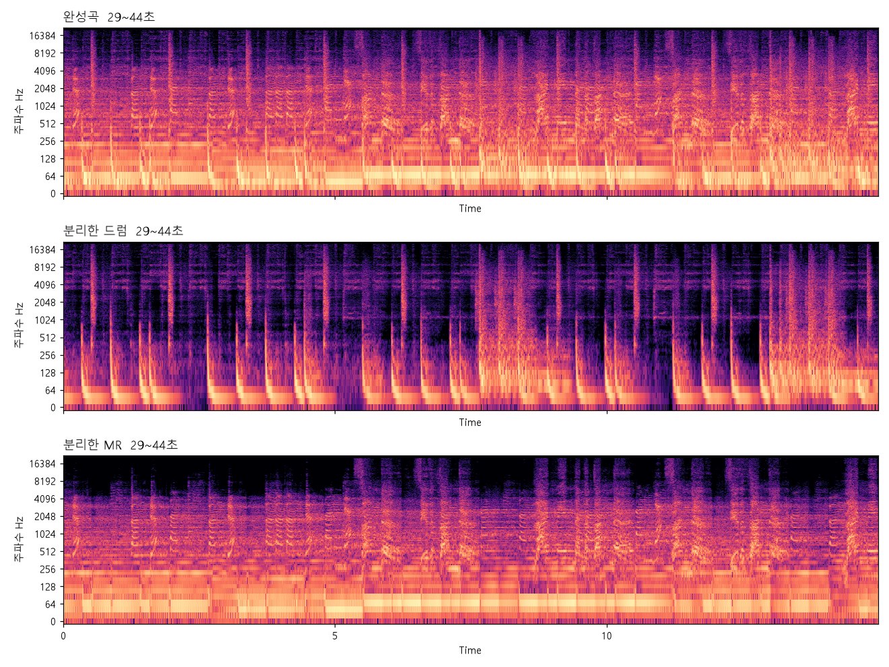
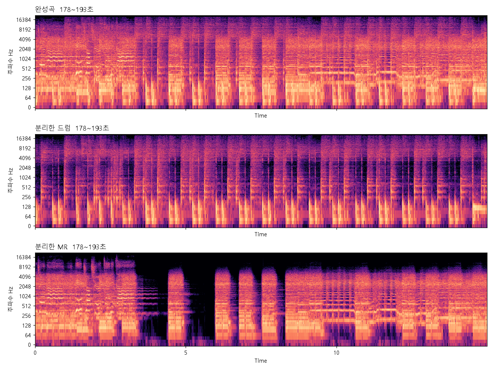

AI 파트 · 스프린트 3 공유
고른 음원 분리 모델,
실제 곡에서도 잘 되나
스프린트 2에서 BS Roformer SW를 음원 분리 모델로 골랐음. 그때는 MUSDB라는 공개 데이터로만 쟀음. 이번에는 실제 드러머가 친 녹음과 요즘 곡으로 다시 확인했음.
한눈에 보기
실제 드러머 녹음에서도 분리 품질은 스프린트 2 벤치마크 수준임. 약점은 실제 연주 MR, 라틴 타악기 곡, 전자음 위주 곡임.
실제 드러머 64곡 드럼 SDR
14.78dB
MUSDB 벤치마크는 13.40dB
분리한 드럼의 타격 보존율
0.903
정답 드럼 파일은 0.913
분리 안 한 완성곡이면
0.795
분리하는 게 확실히 나음
3분 곡 분리 시간
약 12초
서비스 명령, H200 기준
결론
- 음원 분리 모델은 지금 것을 그대로 씀. 분리한 드럼으로 채보하는 구조도 그대로 둠
- 측정 중에 벤치마크 채점 결함을 하나 찾아 고쳤음. 스프린트 2 합성곡 타격 보존율 숫자가 바뀌었지만 모델 선정 결과는 그대로임
- 전자음 위주 곡에서는 분리한 드럼이 먹먹해지는 경우가 있음. 채보에 영향이 있는지 다음에 확인함
1. 왜 다시 쟀나
스프린트 2 벤치마크는 MUSDB test 50곡과 우리가 직접 만든 합성곡 5곡으로 했음. 여러 모델을 한 줄 점수로 비교해 고르는 데는 충분했지만 두 가지가 남았음.
- 고른 모델 하나를 곡 단위로 보면서 어디서 분리가 잘 안 되는지는 보지 않았음
- 실제 드러머가 자기 드럼 세트로 친 녹음에서도 같은 점수가 나오는지 몰랐음
2. 평가 데이터
| 데이터 | 곡 | 완성곡 | 쓰는 점수 |
|---|---|---|---|
| ENST-Drums minus-one | 64곡. 드러머 3명이 각자 자기 드럼 세트로 록·메탈·펑크·살사 등 20가지 넘는 곡을 연주 | 드럼만 녹음된 파일과 드럼리스 MR이 따로 있어 우리가 합쳐서 만듦. 정답 드럼이 완성곡 속 드럼과 정확히 같음 | 드럼 SDR, 타격 보존율 |
| MDB Drums | 23곡. 실제 밴드 녹음. 학습 때 안 들은 11곡을 대표로 씀 | 원래 믹스된 완성곡 | 타격 보존율만 |
- ENST-Drums는 프랑스 Télécom Paris가 연구용으로 공개한 데이터임. 이용 신청서를 메일로 제출해 허가를 받은 뒤 받았음. 평가에만 쓰고 음원은 공유하지 않음
- ENST는 드럼 파일과 MR을 음량 조절 없이 그대로 합쳤음. 이렇게 하면 MR이 드럼보다 4.1dB 큰데, MUSDB 50곡도 반주가 드럼보다 4.3dB 커서 실제 곡과 비율이 거의 같음
- 논문들은 MR을 절반으로 줄여 합치는 경우가 많아서 그 조건도 같이 쟀음. 드럼이 실제 곡보다 커져서 점수가 부풂
3. 드럼 SDR
드럼 SDR 중앙값 비교
클수록 분리한 드럼이 정답 드럼에 가까움. MUSDB는 -105 벤치마크 값
- ENST 64곡 중앙값 14.78dB로 MUSDB 13.40dB와 비슷함
- 실제 곡과 가장 비슷한 조건은 실제 연주로 녹음한 MR 28곡이고 12.30dB임. MUSDB보다 1dB쯤 낮음
- MIDI로 만든 MR 곡은 16.73dB로 더 쉬움. MR을 절반으로 줄이면 18.03dB까지 올라감
- 브러시로 친 6곡은 9.52dB로 스틱 곡 14.93dB보다 낮음. 곡 수가 적어 참고로만 봄
4. 타격 보존율
타격 보존율: 어떤 소리에서 드럼 친 시점을 찾았나
같은 채점 도구, 같은 정답으로 세 입력을 비교. 정답 드럼 파일 값이 이 도구로 나올 수 있는 기준값
- 분리한 드럼에서 찾은 타격 시점이 정답 드럼 파일에서 찾은 것과 거의 같음. 분리 때문에 놓치는 타격이 거의 없다는 뜻임
- 분리하지 않은 완성곡에서 찾으면 MR 악기 소리까지 타격으로 잡혀 0.79 안팎으로 떨어짐
- ENST 64곡 중 17곡은 분리한 드럼이 정답보다 0.03 넘게 낮음. 가장 큰 차이는 드러머 3 살사로 0.657 대 0.900임
5. 점수가 낮게 나온 곡
| 곡 | 드럼 SDR | 드럼 SIR |
|---|---|---|
| 드러머 1 살사 | 1.05 | 2.03 |
| 드러머 3 살사 | 3.86 | 4.20 |
| 드러머 1 소울 MIDI MR | 4.22 | 7.15 |
| 드러머 2 살사 | 4.75 | 5.14 |
| 드러머 3 펑크 | 4.89 | 5.14 |
- 다섯 곡 모두 드럼 SIR이 낮음. 드럼 소리가 망가진 게 아니라 MR 소리가 분리한 드럼 쪽으로 같이 빠진 것임
- 살사는 세 드러머 모두 맨 아래임. MR에 든 타악기를 모델이 드럼으로 본 것으로 추정함
6. MDB로 SDR을 못 재는 이유
- MDB를 그대로 재면 드럼 SDR이 23곡 중앙값 -1.82dB로 나옴. 타격 보존율이 정답 수준인 것과 맞지 않음
- MDB 23곡 중 12곡은 같은 녹음이 MUSDB에도 있음. MUSDB 드럼 파일은 완성곡 속 드럼 그 자체라 둘을 비교했음
- 완성곡끼리는 같은 곡인데, 드럼 파일끼리는 거의 맞지 않았음. MDB 완성곡에서 MDB 드럼 파일을 빼도 드럼 소리가 5~54% 남음
- 즉 MDB 드럼 파일은 완성곡 속 드럼과 다른 소리라 SDR 정답으로 못 씀. MDB 데이터 쪽 문제라 우리 모델이나 서비스와는 상관없음
7. 채점 결함과 수정
무엇이 문제였나
정답 파일은 드러머가 킥과 하이햇을 같은 순간에 치면 같은 시점을 두 줄로 적음. 채점 도구는 그 순간을 한 번만 찾음. 그래서 분리가 완벽해도 두 줄 중 하나가 늘 놓친 것으로 세져 점수가 0.6대에서 막혔음.
- 채점 전에 30ms 안에 붙은 정답 시점을 하나로 합치게 고쳤음. 고친 뒤 ENST는 0.700에서 0.903, MDB는 0.807에서 0.946이 됨
- 스프린트 2 합성곡도 같은 결함이 있었음. MUSDB는 정답 시점을 자동으로 찾아 써서 겹침이 없고 값도 그대로임
| 모델 | 합성곡 타격 보존율 고치기 전 | 고친 뒤 |
|---|---|---|
| BS Roformer SW | 0.642 | 0.832 |
| BS Roformer 공개 데이터판 | 0.638 | 0.829 |
| SCNet-large | 0.625 | 0.814 |
| SCNet XL IHF | 0.619 | 0.808 |
| HTDemucs 기본 버전 | 0.616 | 0.808 |
| HTDemucs 파인튜닝 버전 | 0.601 | 0.790 |
| Open-Unmix umxhq | 0.689 | 0.740 |
- 고치기 전에는 드럼 SDR 꼴찌인 umxhq가 1위였는데 고친 뒤 꼴찌가 됨. 결함 때문에 순위까지 뒤틀려 있었음
- 스프린트 2 모델 선정은 드럼 SDR과 MUSDB 타격 보존율로 했고 둘 다 이 결함과 상관없어서, 선정 결과는 그대로임
8. 최신 곡 분리해 보기
정답이 없는 요즘 곡 세 곡을 실제 서비스 분리 명령으로 돌려 봤음. 점수는 없고 들어 보고 그림으로 보는 확인임. 직접 들어 보려면 최신 곡 분리 비포·애프터 페이지로 가면 됨.
| 곡 | 길이 | 분리 | 모델 올리기 | 스네어 대역이 드럼으로 온 비율 | 드럼 음량, 완성곡 대비 |
|---|---|---|---|---|---|
| T.B.H | 176초 | 12.9초 | 19.6초 | 18% · 6% | -4.9dB |
| Thunder | 187초 | 11.6초 | 21.4초 | 16% · 11% | -6.3dB |
| 혜성 | 195초 | 12.0초 | 20.0초 | 8% · 2% | -9.1dB |
- 3분 곡 분리에 12초 안팎이 걸림. 모델 올리기 20초는 서버를 켤 때 한 번만 함. GPU 메모리는 1.9GB
- "스네어 대역이 드럼으로 온 비율"은 완성곡의 150Hz~1kHz, 1kHz~5kHz 소리 중 분리한 드럼 쪽으로 온 몫임. 킥이 있는 저음과 하이햇이 있는 고음은 세 곡 모두 드럼으로 잘 왔음
- 혜성은 스네어 대역이 8%, 2%만 드럼으로 와서 분리한 드럼이 먹먹하게 들림. T.B.H도 조금 그럼. 드럼만 떼면 완성곡보다 5~9dB 작아지는 건 정상임
- 혜성 그림을 보면 MR이 드럼을 칠 때마다 음량이 푹 줄었다 올라오고, 분리한 드럼에는 신스의 가로 줄이 섞여 있음. 전자음 위주 편곡이라 드럼과 신스가 겹쳐 나누기 어려웠던 것으로 보임
T.B.H
드럼이 가장 센 15초 구간. 위부터 완성곡, 분리한 드럼, 분리한 MR. 세로 줄은 타격, 가로 줄은 음이 이어지는 악기 소리

Thunder
드럼이 가장 센 15초 구간. 위부터 완성곡, 분리한 드럼, 분리한 MR. 세로 줄은 타격, 가로 줄은 음이 이어지는 악기 소리

혜성
드럼이 가장 센 15초 구간. 위부터 완성곡, 분리한 드럼, 분리한 MR. 세로 줄은 타격, 가로 줄은 음이 이어지는 악기 소리

9. 서비스 적용과 다음 할 일
- 음원 분리 모델은 BS Roformer SW 그대로 씀
- 타악기가 많은 라틴 곡과 전자음 위주 곡은 채보 결과를 한 번 확인하는 게 좋음
- 분리한 드럼이 먹먹한 곡에서 채보가 스네어를 놓치는지 다음에 확인함
- m4a 파일은 지금 분리 모듈이 못 읽음. mp3·wav·flac·opus는 됨
용어 정리
| dB | 두 값의 비율을 로그로 나타낸 단위. 10dB는 10배, 20dB는 100배 차이임 |
| 드럼 SDR | 정답 드럼의 에너지를 분리 결과에서 정답과 다른 부분의 에너지로 나눈 비율을 dB로 나타낸 값. 클수록 정답에 가깝고, 14.78dB면 다른 부분이 드럼의 30분의 1 정도임 |
| 드럼 SIR | 분리한 드럼에 MR 소리가 얼마나 적게 섞였는지를 dB로 잰 값. 작을수록 MR이 많이 섞인 것 |
| 타격 보존율 | 드럼 소리에서 librosa 온셋 검출로 드럼 친 시점을 찾아, 사람이 적은 정답 시점과 50ms 안에 맞는 정도. 1이 최고. 친 시점이 남았는지만 보고 소리가 깨끗한지는 보지 않음 |
| 드럼리스 MR | 드럼만 빠진 반주. ENST는 드러머가 이 MR에 맞춰 쳤음 |
| 스펙트로그램 | 소리를 시간과 주파수로 펼친 그림. 밝을수록 그 순간 그 높이의 소리가 큼 |
출처: Gillet, Richard. ENST-Drums. ISMIR 2006 · Southall et al. MDB Drums. ISMIR 2017 LBD · Rafii et al. MUSDB18-HQ. 2019. ENST·MDB 음원은 비상업 연구용이라 이 페이지에는 숫자와 그림만 둠.